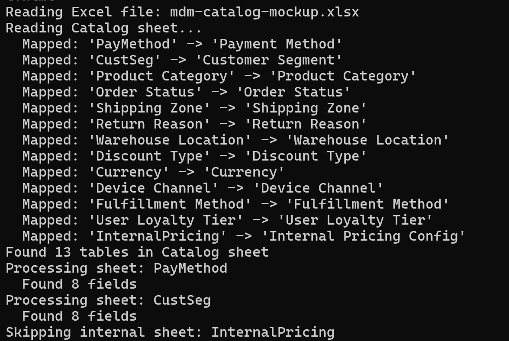
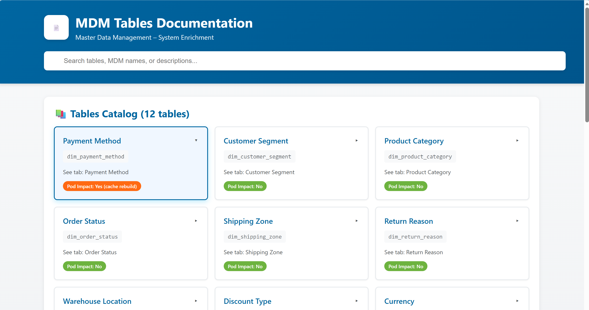
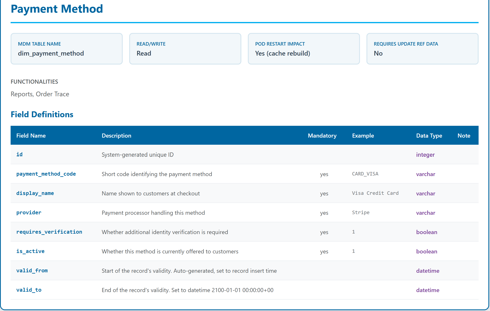

Reference data for the platform was documented across two separate Excel files that had become incomplete and overlapping over time. I came across this gap while looking into an unassigned ticket — documentation normally maintained by developers rather than technical writers. Checking whether a table existed, what fields it required, or which were optional meant cross-referencing both files by hand.
I consolidated both into a single 149-table catalog, then built a Python script that generates a standalone, searchable HTML reference from that Excel file. The result is a reference people can use day to day, without needing to run the script.
I developed the data-cleaning logic around the inconsistencies in the original files — mapping mismatched sheet names, handling incomplete values, and excluding internal-only content. I used AI assistance to implement and refine the Python code.
Sheet tabs in the source Excel don't always match the table names used in the catalog — due to Excel's tab-length limit or inconsistent naming over time. A dedicated _Lists sheet provides the mapping, so the script doesn't have to guess.
The script reads the mapping first and uses it whenever a sheet name has a corresponding catalog name. For sheets without a mapping, it falls back to the sheet name as-is.
sheet_to_table = {}
try:
lists_df = pd.read_excel(excel_path, sheet_name='_Lists')
for _, row in lists_df.iterrows():
sheet_name = row.get('Sheet Name (exact tab)', '')
table_name = row.get('Friendly Name (Catalog)', '')
if pd.notna(sheet_name) and pd.notna(table_name) and str(sheet_name).strip() and str(table_name).strip():
sheet_to_table[str(sheet_name)] = str(table_name)
print(f" Mapped: '{sheet_name}' -> '{table_name}'")
except Exception as e:
print(f"Warning: Could not read _Lists sheet: {e}")
# For sheets not in _Lists, use the sheet name as-is
for sheet_name in excel_file.sheet_names:
if sheet_name not in ['Catalog', '_Lists', 'Maintenance Guide'] and sheet_name not in sheet_to_table:
sheet_to_table[sheet_name] = sheet_nameSome reference tables are for internal use only and shouldn't appear in the published catalog. Rather than maintaining a separate exclusion list, the script checks the Audience column in the Catalog sheet and skips any table marked static-internal.
for sheet_name in excel_file.sheet_names:
if sheet_name in skip_sheets:
continue
actual_table_name = sheet_to_table.get(sheet_name, sheet_name)
if actual_table_name in table_metadata:
audience = table_metadata[actual_table_name].get('audience', '')
if 'static-internal' in str(audience).lower():
print(f"Skipping internal sheet: {sheet_name}")
continueIn the mock run, 13 tables exist in the source Excel — one ("Internal Pricing Config") is marked static-internal and is excluded automatically, leaving 12 in the published catalog:

The generated catalog is a standalone HTML file, searchable by table name, MDM table name, or description. Each table has its own card with a link to the full field definitions. No server or database is required — anyone can open it directly in a browser.
View live demo →
